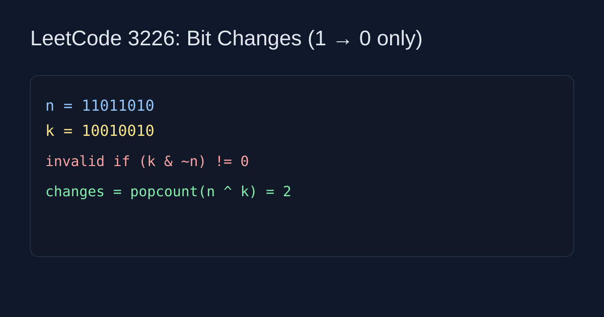

LeetCode 3226: Number of Bit Changes to Make Two Integers Equal (Bit Manipulation)
LeetCode 3226Bit ManipulationToday we solve LeetCode 3226 - Number of Bit Changes to Make Two Integers Equal.
Source: https://leetcode.com/problems/number-of-bit-changes-to-make-two-integers-equal/

English
Problem Summary
Given integers n and k, you may flip bits in n from 1 to 0. Return the minimum flips needed to make n == k, or -1 if impossible.
Key Insight
You can never create a 1 bit. So every 1 in k must already be 1 in n. If (k & ~n) != 0, impossible.
Algorithm
If feasible, changed bits are exactly positions where n has 1 and k has 0, which is n ^ k. Answer is popcount of that mask.
Complexity
Time O(1), Space O(1).
Reference Implementations (Java / Go / C++ / Python / JavaScript)
class Solution { public int minChanges(int n, int k) { if ((k & ~n) != 0) return -1; return Integer.bitCount(n ^ k); } }func minChanges(n int, k int) int { if (k & ^n) != 0 { return -1 }; return bits.OnesCount(uint(n ^ k)) }class Solution { public: int minChanges(int n, int k) { if ((k & ~n) != 0) return -1; return __builtin_popcount(n ^ k); } };class Solution:
def minChanges(self, n: int, k: int) -> int:
if k & ~n:
return -1
return (n ^ k).bit_count()function minChanges(n, k) { if ((k & ~n) !== 0) return -1; const x = n ^ k; return x.toString(2).split('1').length - 1; }中文
题目概述
给定整数 n 和 k，你只能把 n 的某些二进制位从 1 变成 0。求最少操作次数使 n == k，无解返回 -1。
核心思路
因为不能把 0 变 1，所以 k 中为 1 的位必须在 n 里本来就是 1。若 (k & ~n) != 0 则无解。
算法步骤
可行时，真正要改的是 n 为 1 且 k 为 0 的位，即 n ^ k 中的 1 位数量。
复杂度分析
时间复杂度 O(1)，空间复杂度 O(1)。
多语言参考实现（Java / Go / C++ / Python / JavaScript）
class Solution { public int minChanges(int n, int k) { if ((k & ~n) != 0) return -1; return Integer.bitCount(n ^ k); } }func minChanges(n int, k int) int { if (k & ^n) != 0 { return -1 }; return bits.OnesCount(uint(n ^ k)) }class Solution { public: int minChanges(int n, int k) { if ((k & ~n) != 0) return -1; return __builtin_popcount(n ^ k); } };class Solution:
def minChanges(self, n: int, k: int) -> int:
if k & ~n:
return -1
return (n ^ k).bit_count()function minChanges(n, k) { if ((k & ~n) !== 0) return -1; const x = n ^ k; return x.toString(2).split('1').length - 1; }
Comments